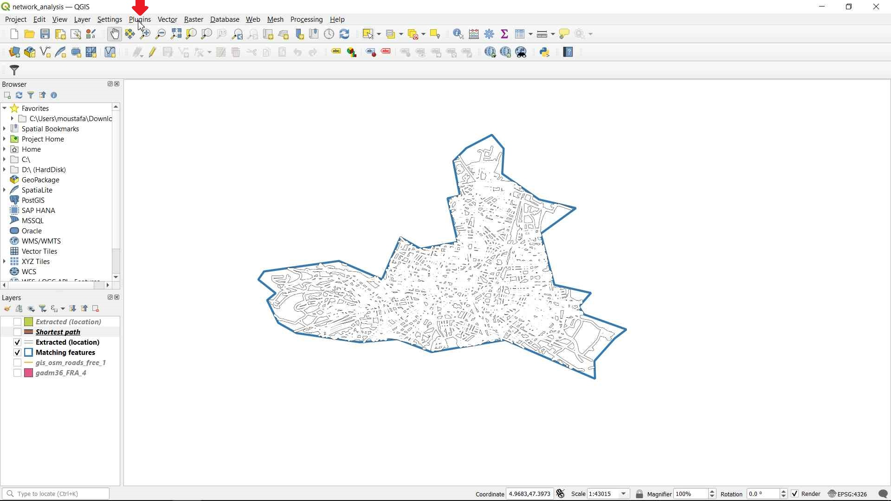
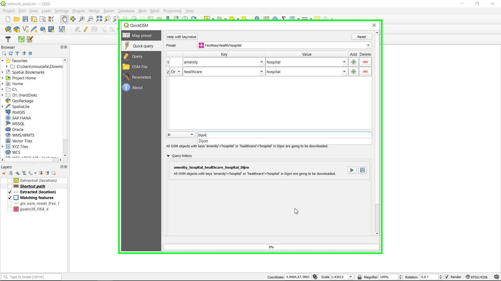
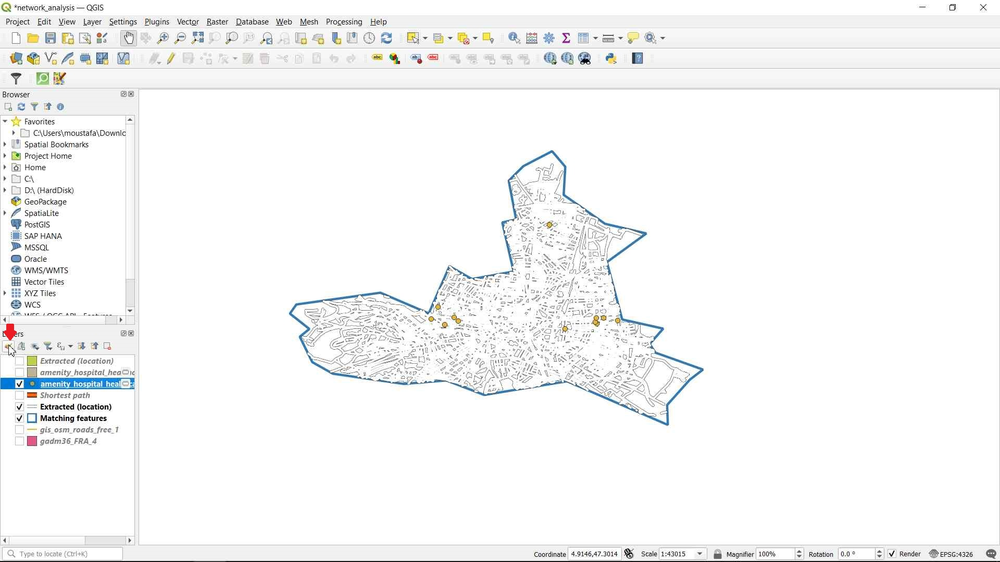
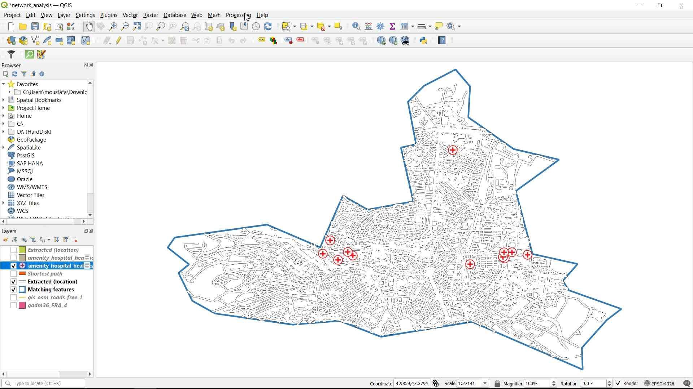
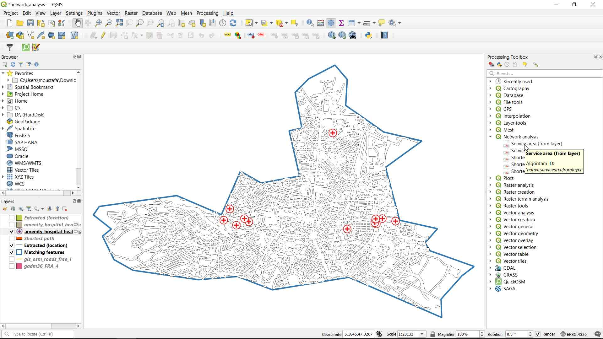
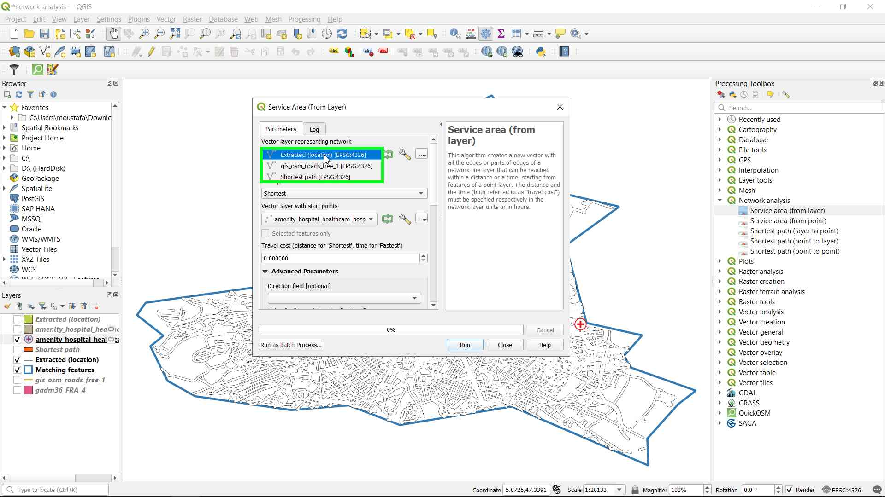
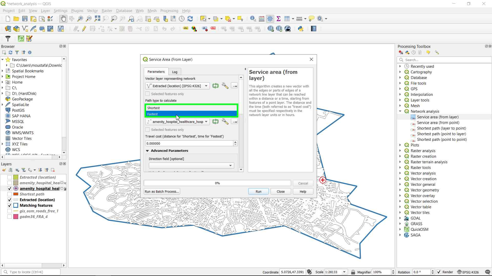
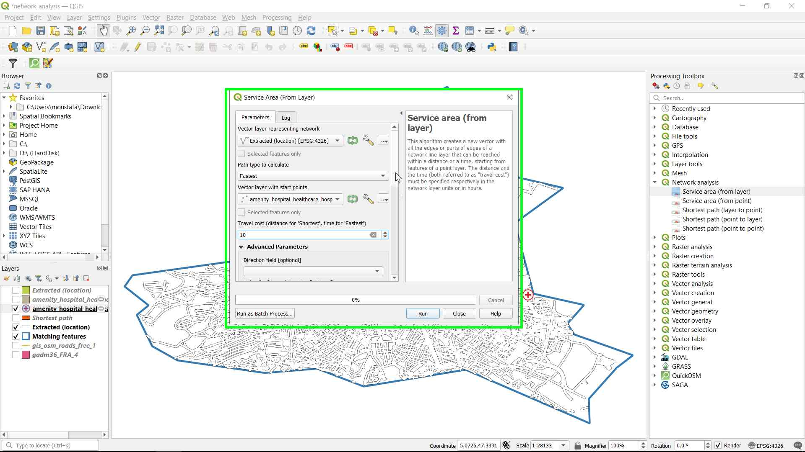
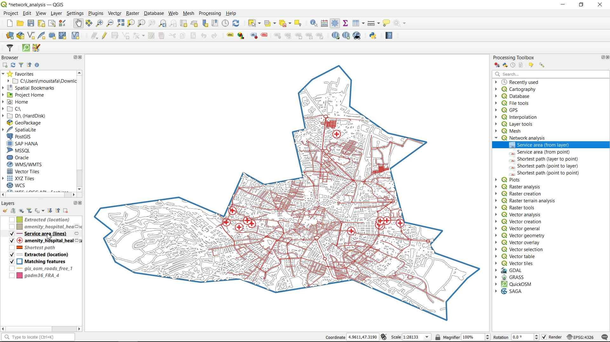

Service Area Analysis (From layer):
-
In this tutorial we will learn how to use the Service Area Network Analysis () in Dijon city.
-
We will continue from where we left of in the second tutorial you can find it point-to-point-fastest-path
Goal:
-
Download free OSM data using the QuickOSM Plugin for QGIS
-
Show all the roads that the hospitals in Dijon can cover in 10 minutes.
Required data:
Data Sources:
We will use the same data we extracted on the last tutorial:
- Matching features layer which is extracted from a shapefile containing the cantons of France which is the boundaries of Dijon canton.
- Extracted (location) layer which contains the roads inside Dijon canton.
Step by Step Tutorial:
Step 1 Download and style the data:
- Click on the Plugins menu from QGIS toolbar and then click on Manage and Install Plugins:

- In the search bar type QuickOSM and then click on Install Plugin:
- Open the QuickOSM plugin by clicking on its icon:
- The plugin menu will appear, In the Preset search bar type hospital and click on Facilities/Health/Hospital, A new Query will appear which for all the hospitals. Then in the location type Dijon, To search for Hospitals that are located in Dijon only. Finally click on Run query:

- Two new layers are added by the query, a point and a polygon layer, let's turn off the polygon layer as we will not use it.
- Let's choose a new style for the "amenity hospital healthcare hospital Dijon" layer:

- We can have a look at the Attribute table to see its content:
Step 2 Network Analysis Service Area:
- Click on the Processing menu from QGIS toolbar then open the Toolbox.

- From the Processing Toolbox go to Network analysis > Service area (from layer).

- The Service Area (from layer) algorithm window will open, Choose the "Extracted (location)" layer as the Vector layer representing network. Then, choose "Fastest" as the Path type to calculate, this type takes the Travel cost as time, In our case we will make it as 10 minutes:



- In the Advanced parameter, choose the oneway field as the Direction field, and F for the Value for forward direction, T for Value for backward direction, B for Value for both directions, and maxspeed as the Speed field, Finally click Run to run the algorithm:
